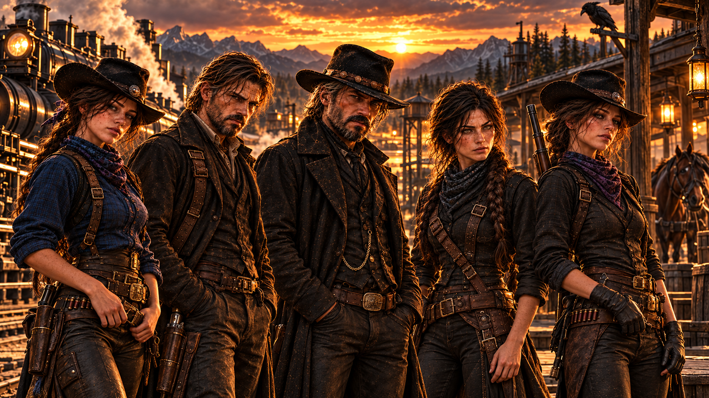

KAŽDÝ MÁ SVOU MINULOST.
Pět osudů. Který příběh otevřeš?
05 / 05 PŘÍBĚHŮ← POSUŇ MEZI POSTAVAMI →

← POSUŇ MEZI POSTAVAMI →
Ne každý náklad je zapsaný v knihách.
Nate
Železničář. Obchodník. Muž, který se
naučil znát cenu mlčení.

Jestli hledáte slušnýho chlapa, zkuste kostel.NATHANIEL JAMES RAVEN
Jestli hledáte někoho, kdo svou práci odvede,
možná se domluvíme.
Po letech cestování dostávají možnost být znovu poblíž sebe. Každý si však přiváží vlastní cíle a tajemství.
Chce se věnovat výcviku koní. Temperament a tvrdohlavost si přiváží z Missouri.
Příběh připravujemeHledá vlastní životní cestu. Nathaniel k ní od dětství cítí silné ochranné pouto.
Příběh připravujeme